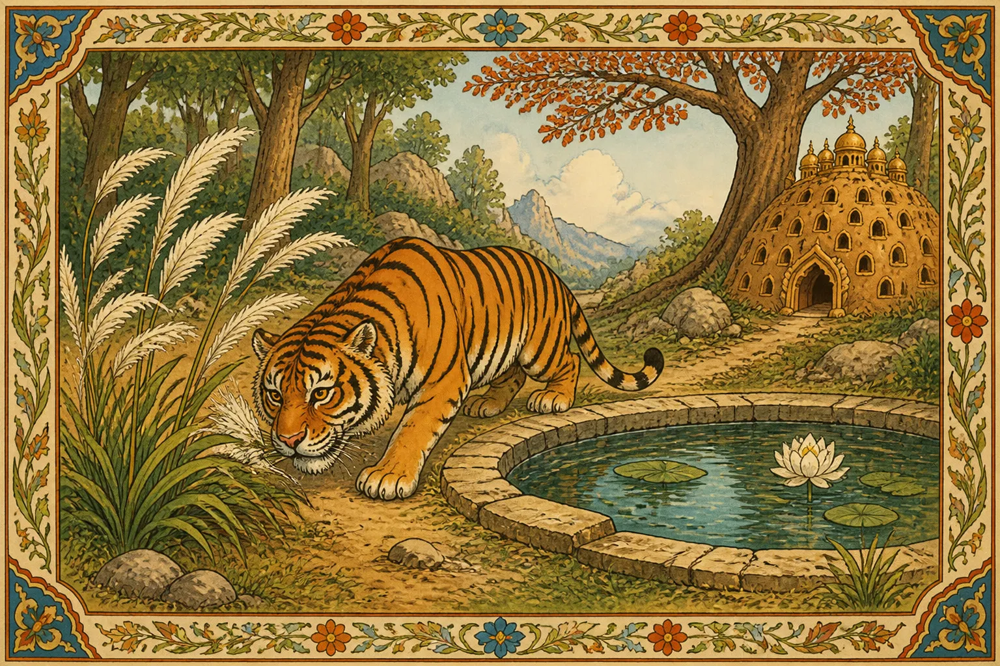
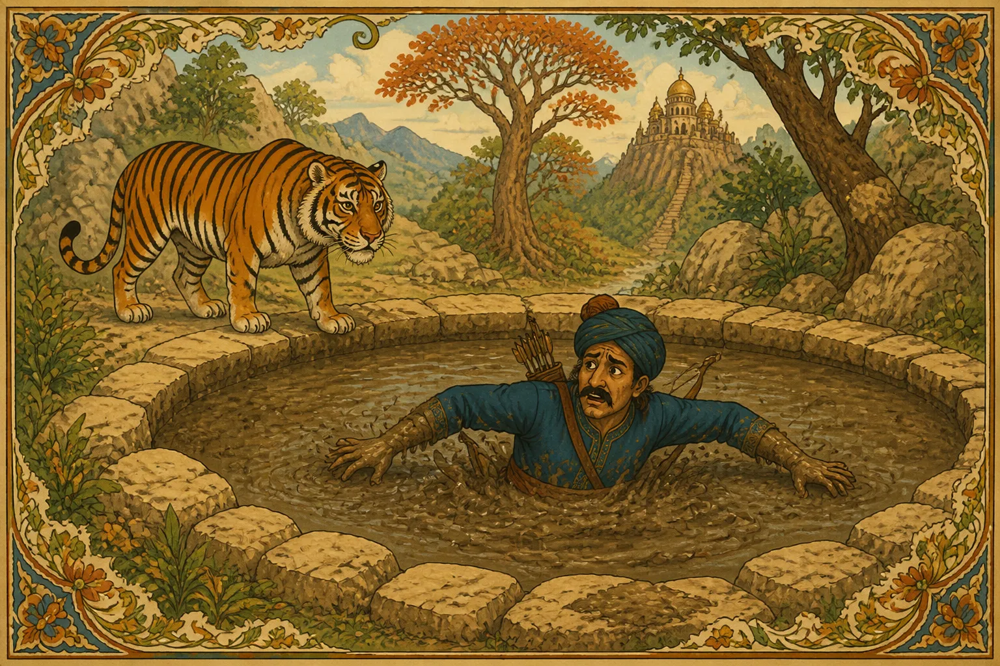
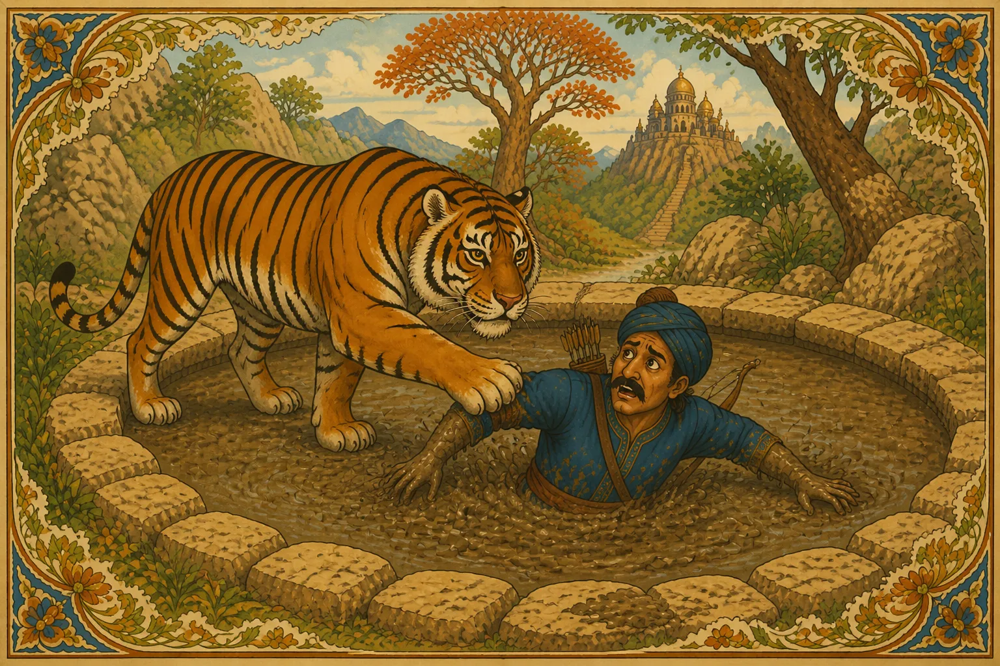

Thus," replied Speckle-neck: "I was pecking about one day in the Deccan forest, and saw an old tiger sitting newly bathed on the bank of a pool, like a Brahman, and with holy kuskus-grass in his paws.
'Ho! ho! ye travellers,' he kept calling out, 'take this golden bangle!'
Presently a covetous fellow passed by and heard him.
'Ah!' thought he, 'this is a bit of luck—but I must not risk my neck for it either.
"Good things come not out of bad things; wisely leave a longed-for ill. Nectar being mixed with poison serves no purpose but to kill."
The Tiger stretched forth his paw and exhibited it.
'Hem!' said the Traveller, 'can I trust such a fierce brute as thou art?'
'Listen,' replied the Tiger, 'once, in the days of my cub-hood, I know I was very wicked. I killed cows, Brahmans, and men without number—and I lost my wife and children for it—and haven't kith or kin left. But lately I met a virtuous man who counselled me to practise the duty of almsgiving—and, as thou seest, I am strict at ablutions and alms. Besides, I am old, and my nails and fangs are gone—so who would mistrust me? and I have so far conquered selfishness, that I keep the golden bangle for whoso comes. Thou seemest poor! I will give it thee. Is it not said,
'Give to poor men, son of Kûnti —on the wealthy waste not wealth; Good are simples for the sick man, good for nought to him in health.'
Thereupon the covetous Traveller determined to trust him, and waded into the pool, where he soon found himself plunged in mud, and unable to move.

'Ho! ho!' says the Tiger, 'art thou stuck in a slough? stay, I will fetch thee out!'
So saying he approached the wretched man and seized him—who meanwhile bitterly reflected—
'Be his Scripture-learning wondrous, yet the cheat will be a cheat; Be her pasture ne'er so bitter, yet the cow's milk will be sweet.'
'Trust not water, trust not weapons; trust not clawed nor horned things; Neither give thy soul to women, nor thy life to Sons of Kings.'
'Look! the Moon, the silver roamer, from whose splendor darkness flies With his starry cohorts marching, like a crowned king through the skies. All the grandeur, all the glory, vanish in the Dragon's jaw; What is written on the forehead, that will be, and nothing more.'
